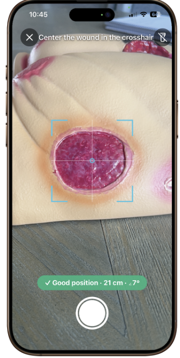
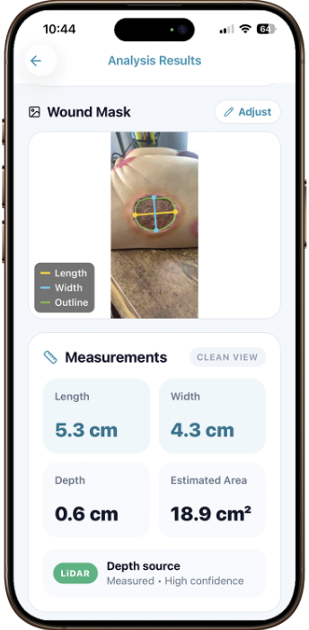
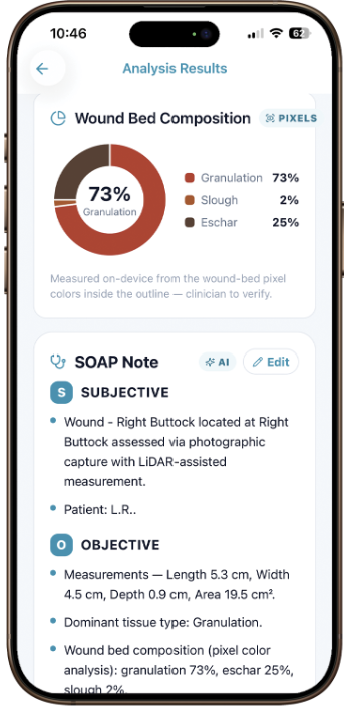

Sheet 01 of 06
Blue Swan BioMed · 2026
Precision wound measurement and documentation, running on the iPhone a clinician already has in their pocket.
Role
Product Development Intern — co-built with Lorenzo Ruma
Organization
Blue Swan BioMed
One Health Partners
Built with
iOS · LiDAR depth capture · On-device image analysis
Status
In beta with clinician testers
Wound documentation has barely changed in decades. Measurement is done with a paper ruler and a cotton swab, which means two clinicians assessing the same wound can record meaningfully different numbers — and multiplying length by width to estimate area systematically overstates it, badly, on any wound that isn't a neat oval.
That matters more than it first appears. Wound care is a longitudinal problem: the clinical question is almost never "how big is this today," it's "is this healing." If the baseline measurement isn't trustworthy, every follow-up comparison inherits the error, and a wound that's deteriorating can look stable on paper.
The record is fragmented on top of that. Photos live on one device, measurements on paper, notes somewhere else, and the write-up happens by hand afterward — time taken directly out of patient care.
Every iPhone Pro since the 12 Pro carries a LiDAR sensor. It emits a pulse of laser light, times how long the reflection takes to return, and — because the speed of light is known — converts that interval into a precise distance. Repeated thousands of times across a surface, it produces a depth map.
That's the piece conventional wound photography can't do. A camera gives you a flat image; depth sensing gives you the third dimension, which is what turns a photograph into a measurement. And because the hardware already exists in a device clinicians carry, adopting it costs nothing — no dongle, no calibration sticker, no proprietary scanner.
The app covers the full assessment workflow. A clinician adds a patient, places the wound on a body diagram, and captures it. The capture step is guided — the app checks distance, angle, and framing before it will take the shot, so this week's measurement is genuinely comparable to last week's rather than being taken from a different position under different light.
From a single capture it computes length, width, depth, and surface area without anything touching the wound bed. It then analyzes the wound bed itself, classifying tissue types — granulation, slough, eschar, and epithelialization — from on-device pixel analysis inside the traced outline, and reporting the estimated share of each.
Those measurements and the tissue assessment are synthesized into a draft SOAP note. The clinician reviews, edits, and signs it. Nothing enters the record automatically, and the app is explicit throughout that its output is for clinician verification — the drafting is automated, the judgment is not.



I co-built the app with Lorenzo Ruma over the summer. Before either of us designed anything, I spent more than fifty hours shadowing five physicians across five specialties — watching how wound assessment actually happens rather than how it's described in a protocol.
That's what the clinical logic came out of. Alongside the app I built a wound care matrix: a structured reference for matching dressings to wounds, ordered by drainage first and depth second, with the tissue states and contraindications that determine when a given dressing is appropriate. Encoding that reasoning is what lets software evaluate a wound bed consistently instead of just describing it.
The shadowing shaped smaller decisions too. Guided capture exists because I watched how variably photographs get taken in a real exam room, and the review-and-sign requirement exists because no physician I observed was going to accept a note they hadn't read.
4
Measurements — length, width, depth, area — from a single capture
0
Extra hardware. Runs on an iPhone the clinic already owns
50+
Hours shadowing 5 physicians across 5 specialties first